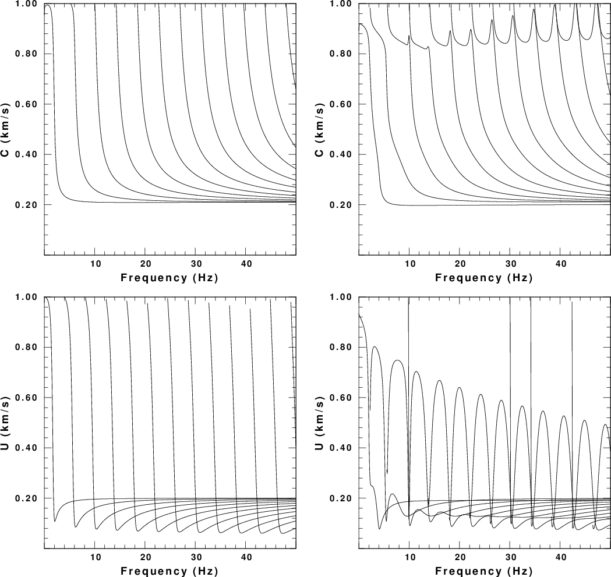
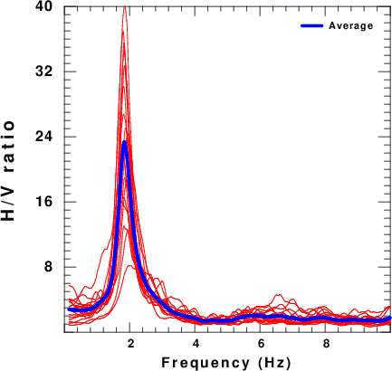

The purpose of this tutorial is to generate surface wave noise for a known 1-D structural model. This is done by appling randomly oriented point forces at the surface of the structure and then propagating the 3-D ground motions to the receiver. The ground motions consists of multimode Rayleigh and Love waves.
The measurement of H/V is documented in several places:
This tutorial will focus on the generation of synthetic Z, N and E waveforms in Sac format.
This exercise is contained in the gzip's tar file HVNOISE.tgz
After downloading execute the following commands:
gunzip -c HVNOISE.tgz | tar xf -
This procedure creates a directory strucutre and puts the processing files there:
HVNOISE.dist/ HVNOISE.dist/DOITHVHF HVNOISE.dist/DOSPECRAT HVNOISE.dist/Models/ HVNOISE.dist/Models/ HVNOISE.dist/Models/soilm2.mod HVNOISE.dist/Models/soil.mod HVNOISE.dist/Models/CUS.mod
This shell script performs the simulation. It has many comment lines to describe each operation. The initial part of the shell script defines the parameters that control the results. The reason for writing the script in this manner is so that much of it can be used to simulate the noise fields at two stations so that ambient noise cross-correlation techniques could be used to estimate the empirical Green's function.
For the example here, we consider the velocity model HVNOISE.dist/Models/soilm2.mod. The dispersion curves for this model are given Figure 1. The fundamental and higher modes are plotted. The odd behavior for the Rayleigh wave phase velocities near the velocity of about 0.8 km/s is due to the use of a causal Q operator and the low Q of the upper layer of the model. The group velocities are for infinite Q. The group velocities indicate that there could be arrivals propagating as slow as 80 m/s. (0.08 km/sec).
|  Fig. 1. Dispersion curves for the test model. The first row gives phase velocity and the second gives group velocity. The left column is for Love waves and the right is for Rayleigh waves. |
As set up, the script DOITHVHF ultimately creates 900 seconds fo 3-component noise as the sac files E.stk, N.stk and Z.stk. The user can then process these time series to determine the H/V ratio using their own or other routines. The script DOSPECRAT uses these series to create CSV files of the amplitude spectra through the gsac command outcsv.
The initial part of DOSPECRAT sets up the parameters for the simulation. This part is as follows:
#!/bin/bash
#####
# create a noise data set by generating synthetic
# motions from randomly distributed point forces
# applied at the surface
#
# To reflect real data we create individual segments
# define the power spectra and finally the ratio tp get H/V
#
# This script is designed for high frequency
# motions for local site studies
#####
#####
# Velocity model
#####
VMOD="Models/soilm2.mod"
#####
# for surface wave synthetics
#####
NMODE=100 #The maximum number of modes to
#include depends on the velocity model
#####
# noise sources: These occur in the region
# -XMAX <= x <= XMAX
# -YMAX <= y <= YMAX
# except about a region DMIN about the receiver
#####
DELTA=0.01 # sample interval in seconds
DMIN=0.005 # exclude sources within DMIN km of receiver
# These may be adequate for a local survey at high frequency
XMAX=1.000 # define source region
YMAX=1.000
#####
# define the receiver coordinate
# XR,YR
#####
XR=0.0
YR=0.0
#####
TMAX=900 # The sac file will 0 to TMAX seconds long
#
NSRC=10000 # number of random sources This is an extensive run
# these will occur at intervals of TMAX/NSRC seconds
################### do not change after here #####################
The next part of the script defines some functions. The details of
the functions
are not given in this description.
function getvmodextreme () {
#####
# examine the velocity model to determine the
# minimum and maximum shear velocities which
# will be used for the noise sampling
#
# the following are returned globally:
# VMIN - minimum S velocity in the model
# VMAX - maximum S velocity in the model
#####
}
function getsrc()
{
#####
# get random coordinates in the region
# -XMAX ≤ x ≤ XMAX
# -YMAX ≤ y ≤ YMAX
#
# the following are returned globally:
# (XS,YS) - source coordinates in km
# (EVAL,EVLO) - source coordinate in geocentrc coordinates
# - for simplicity the receivers are assumed to be
# - near (0,0) so that te conversion from km to degree
# - does is essentially cartesian
#####
}
function getforce()
{
#####
# get the components for the force to be applied at the surface
# the following are returned globally:
# FN - force component in north direction
# FE - force component in east direction
# FD - force component in down direction
#
#####
}
The last part of the script performs the simulation:
##### everything below here does the synthetic of the noise #####
#####
# clean up previouse run
#####
rm -f ??????.stk
#####
# get the extreme values of the S velocity from the model
#####
getvmodextreme
echo VMIN=$VMIN VMAX=$VMAX
#####
# first generate the eigenfunctions so that the
# synthetics can be made
# The time window must be long enough to encompass the
# arrivals at the fastest and slowest velocities
#####
NPT=`echo $XMAX $YMAX $VMIN $VMAX $DELTA | awk \
'{ DIST=sqrt($1*$1 + $2*$2) ; TWIN=(DIST/$3 ) ; print int(TWIN/$5)}' `
DIST=`echo $XMAX $YMAX | awk '{print sqrt($1*$1 + $2*$2)}' `
echo DIST $DIST XMAX $XMAX YMAX $YMAX
cat > ddfile << EOF
${DIST} ${DELTA} ${NPT} 0.0 0.0
EOF
sprep96 -M ${VMOD} -HS 0 -HR 0 -L -R -NMOD ${NMODE} -d ddfile
sdisp96
sregn96
slegn96
FNYQ=`echo $DELTA | awk '{print 0.5/$1}' `
#####
# make plot of the dispersion of the form
# LC RC
# LU RU
#####
rm -fr S?EGN?.PLT
rm -f DISP.PLT
sdpegn96 -L -C -XLIN -YLIN -X0 2.0 -Y0 8 -XLEN 6 -YLEN 6 -YMIN 0 \
-YMAX ${VMAX} -XMIN 0.0 -XMAX ${FNYQ}
sdpegn96 -L -U -XLIN -YLIN -X0 2.0 -Y0 1 -XLEN 6 -YLEN 6 -YMIN 0 \
-YMAX ${VMAX} -XMIN 0.0 -XMAX ${FNYQ}
sdpegn96 -R -C -XLIN -YLIN -X0 9.5 -Y0 8 -XLEN 6 -YLEN 6 -YMIN 0 \
-YMAX ${VMAX} -XMIN 0.0 -XMAX ${FNYQ}
sdpegn96 -R -U -XLIN -YLIN -X0 9.5 -Y0 1 -XLEN 6 -YLEN 6 \
-YMIN 0 -YMAX ${VMAX} -XMIN 0.0 -XMAX ${FNYQ}
cat S?EGN?.PLT > DISP.PLT
#####
# now make the synthetics
# for each subsource
# get source coordinates
# get force orientation
# make synthetic
# use gsac to apply the force
# open the synthetic using cut o 0 o TMAX
# save
# then stack the subsources
#####
count=1
while [ $count -lt ${NSRC} ]
do
SRC=`echo $count | awk '{printf "%6.6d", $1}' `
getsrc
# echo $EVLA $EVLO $XS $YS
getforce
# echo $FN $FE $FD
DIST=`echo $XS $YS $XR $YR | awk '{ DX=$1-$3; DY=$2-$4;print sqrt(DX*DX + DY*DY)}'`
#####
# Y = north
# X = east
#####
AZ=`echo $XS $YS $XR $YR |awk '{DX=$3-$1;DY=$4-$2;print atan2(DX,DY)*180/3.1514927 }' `
BAZ=`echo $XR $YR $XS $YS|awk '{DX=$3-$1;DY=$4-$2;print atan2(DX,DY)*180/3.1514927 }' `
TSHIFT=`echo $SRC $NSRC $TMAX | awk '{WIN=$3/$2; print ($1 -1.) * WIN}'`
######
# check to see that DIST > DMIN
#####
ANS=`echo $DIST $DMIN | awk '{ if ( $1 >= $2 ) print "YES" ; else print "NO" }' `
if [ $ANS = "YES" ]
then
cat > dfile << EOF
${DIST} ${DELTA} ${NPT} 0.0 0.0
EOF
#####
# clean up from previous run
#####
rm -f *.[ZRT][DSEHV][[DSXF]
spulse96 -V -p -l 2 -d dfile -EXF | f96tosac -G
F=`ls *.ZVF`
B=`basename $F .ZVF`
gsac << EOF
mt to ZNE AZ ${AZ} BAZ ${BAZ} FN $FN FE $FE FD $FD FILE $B
shift F ${TSHIFT}
w
q
EOF
mv T.Z ${SRC}.Z
mv T.N ${SRC}.N
mv T.E ${SRC}.E
count=`expr $count + 1 `
fi
done
#####
# make the final stack
#####
gsac << EOF
cut o o ${TMAX}
r ??????.E
stack relative
ch kcmpnm E
w E.stk
r ??????.N
stack relative
ch kcmpnm N
w N.stk
r ??????.Z
stack relative
ch kcmpnm Z
w Z.stk
q
EOF
To be consistent with standard practive, the H/V ratios should be estimated following the standards given in the references listed above. However the script DOSPECRAT indicates how this could be done using gsac, awk, genplt and the ImageMagick package convert.
The script assumes that the three-component noise data set is 900 seconds long. It then processes succeeding 50 sec windows of the simulated nosie by removing a mean trend, applying a Hanning window, computing the spectra, saving the amplitude spectrum, smoothing it using a 21 point mean smoother, and then saving the result as a CSV file (which can be read by Excel).
Then awk is used to form the ratio of the geometric mean of horizontal spectra to the vertical spectra for each window. When this is done an arithmetic average fo the ratios is formed.
Finally genplt is used to make a plot of the individual estimates of the H/V ratio. The result is shown in the next figure:
|  Fig. 2. Plot of individual H/V ratios (red) and the average ratio |
The synthetic noise should be realistic for site investigations since it is assumed that the surface-generated surface waves will be the largest component of the recorded noise.
This is a forward simulation. This tutorial does not consider te inverse problem of how the H/V ratio can be use to define structure.